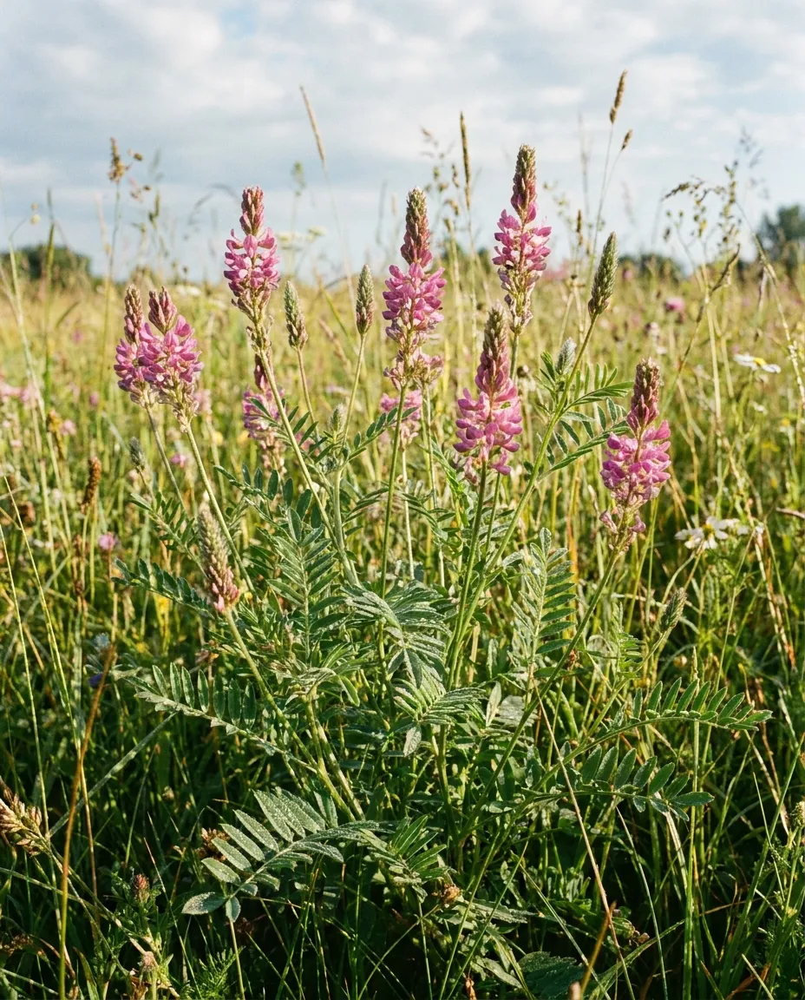

ЭСПАРЦЕТ
Эспарцет — многолетняя бобовая кормовая и медоносная культура. Он используется для производства зелёного корма, сена, сенажа и травяной муки, а также способствует биологическому накоплению азота и улучшению плодородия почвы. Культура отличается высокой кормовой ценностью, хорошей поедаемостью и является важной составляющей устойчивых кормовых севооборотов.
Благодаря развитой корневой системе эспарцет способен эффективно использовать влагу и сохранять продуктивность в засушливых условиях. Его обильное цветение делает культуру ценным медоносом. Селекционная программа направлена на создание высокопродуктивных, зимостойких и засухоустойчивых форм с улучшенной кормовой и семенной продуктивностью, долголетием травостоя и устойчивостью к неблагоприятным факторам среды.

Направления селекции
- Высокая урожайность зелёной и сухой массы
- Повышенное содержание белка, питательность и качество корма
- Высокая семенная продуктивность и технологичность семеноводства
- Засухоустойчивость и эффективное использование влаги
- Зимостойкость, морозоустойчивость и устойчивость к весенним заморозкам
- Долголетие травостоя и интенсивное отрастание после укоса
- Устойчивость к полеганию и пригодность к механизированной уборке
- Устойчивость к болезням, вредителям и неблагоприятным факторам среды
- Адаптивность к различным почвенно-климатическим условиям
- Высокая нектаропродуктивность и медоносные качества
- Скороспелость